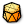

 Mesh Antiprism
Component Index > Weaverbird > Wb Define > Mesh Antiprism
Inputs
| Name | ID | Description | Type |
|---|---|---|---|
| Plane | P | A plane used to form the base of the solid | Plane |
| Width | W | The base circle width | Number |
| NumberOfSides | S | The number of sides of the base polygon | Integer |
| TopPoint | T | The point defining the top of the solid | Point |
| BasePolygonMethod | C | True: the width refers to the radius of the circumscribed circle False: the width refers to the inscribed circle | Boolean |
| FillStrategy | F | The filling strategy 0: Skip. No insertions at the targeted faces. 1: Best. Use the best combination available today. 2: Triangle Fan. A fan of triangles, with an addition center point. 3: Triangle Hand. A series of triangles, all pointing towards vertex zero. 4: Triangle Knit. Triangles start from vertex 0 and follow in rectangular way. 5: Triangle Zigzag. Triangles start from vertex 0 and alternate. 6: Quad Stitch. Lays quads except in last segment if it is odd. 7: Quad Fan. Adds a central point and positions quads every two edges. | TessellationEnum |
Outputs
| Name | ID | Description | Type |
|---|---|---|---|
| OutMesh | O | The resulting mesh () | Mesh |
Copyright © 2016 Robert McNeel & Associates.